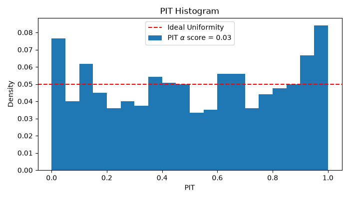
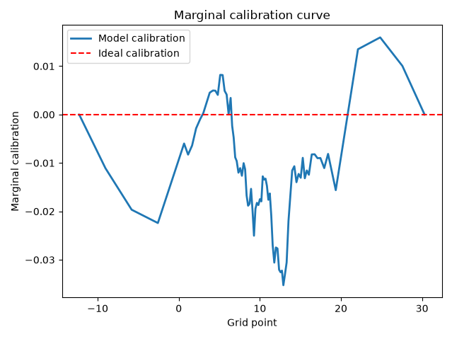

Model evaluation
This example demonstrates how to assess a fitted model's predictive accuracy using
ordboost.metrics. Three metrics are used:
a plain point-prediction error (MAE), a proper scoring
rule over the full predicted distribution (CRPS), and a skill score
comparing the model against a naive, covariate-free baseline (CRPSS).
First let's create some synthetic data. The data is split into a train and testing
set.
| import numpy as np
from sklearn.metrics import mean_absolute_error
from sklearn.model_selection import train_test_split
from ordboost import OrdBoostRegressor
from ordboost.metrics import baseline_distribution, crps_score, crps_skill_score
# --- Generate data ---
rng = np.random.default_rng(42)
n_samples = 1000
X = rng.standard_normal((n_samples, 3))
y = X[:, 0] * 8.0 + X[:, 1] * 3.0 + rng.standard_normal(n_samples) * 4.0
X_train, X_test, y_train, y_test = train_test_split(
X, y, test_size=0.2, random_state=42
)
|
Now we can create the OrdBoostRegressor and fit the model. We opted for showing
a model creation with most default settings. Hence, the model uses the
EmpiricalMedianBinMapper as a mapping strategy and the bins are created using
the quantiles as well as the min and max values of y_train for a total of 11
bin edges.
| model = OrdBoostRegressor(n_bins=10, random_state=42)
model.fit(X_train, y_train)
|
Once the model has been fitted on the train data, it can be evaluated on the test
data. We are going to measure three different metrics to evaluate the accuracy
of the model. The first is the mean absolute error (MAE) between the ground truth
y_test outcomes and the model median predictions.
| y_pred = model.predict(X_test, method="median")
dist_test = model.predict_dist(X_test)
# --- Mean Absolute Error
# point-prediction accuracy
mae = mean_absolute_error(y_test, y_pred)
|
The continuous ranked probability score (CRPS) is a generalisation of the MAE to
distributional predictions, such as the ones generated with OrdBoostRegressor.
The crps_score function therefore needs the predictive distributions and not the
point-estimate predictions.
| # proper scoring rule over the full predicted distribution
crps = crps_score(y_test, dist_test)
|
The CRPS skill score (CRPSS) compares the CRPS from a naive baseline with the CRPS
from the model. The baseline is built from the full training set, sized to match
the evaluation set (y_test), and represents the best achievable forecast
with zero patient/sample-specific information. Every sample gets the
same unconditional distribution. A CRPSS of 0 means no better than this
baseline; 1 is a perfect forecast; negative values are worse than the
baseline.
| # skill relative to a naive, covariate-free baseline
dist_baseline = baseline_distribution(y_train, n_samples=len(y_test))
crpss = crps_skill_score(y_test, dist_test, dist_baseline)
print(f"MAE: {mae:.3f}")
print(f"CRPS: {crps:.3f}")
print(f"CRPSS: {crpss:.3f}")
|
The results should be:
MAE: 3.824
CRPS: 2.813
CRPSS: 0.514
Full example:
| Evaluating performances with MAE, CRPS, and CRPSS |
|---|
| import numpy as np
from sklearn.metrics import mean_absolute_error
from sklearn.model_selection import train_test_split
from ordboost import OrdBoostRegressor
from ordboost.metrics import baseline_distribution, crps_score, crps_skill_score
# --- Generate data ---
rng = np.random.default_rng(42)
n_samples = 1000
X = rng.standard_normal((n_samples, 3))
y = X[:, 0] * 8.0 + X[:, 1] * 3.0 + rng.standard_normal(n_samples) * 4.0
X_train, X_test, y_train, y_test = train_test_split(
X, y, test_size=0.2, random_state=42
)
# --- Fit
model = OrdBoostRegressor(n_bins=10, random_state=42)
model.fit(X_train, y_train)
# --- Predict
y_pred = model.predict(X_test, method="median")
dist_test = model.predict_dist(X_test)
# --- Mean Absolute Error
# point-prediction accuracy
mae = mean_absolute_error(y_test, y_pred)
# --- CRPS ---
# proper scoring rule over the full predicted distribution
crps = crps_score(y_test, dist_test)
# --- CRPS skill score
# skill relative to a naive, covariate-free baseline
dist_baseline = baseline_distribution(y_train, n_samples=len(y_test))
crpss = crps_skill_score(y_test, dist_test, dist_baseline)
print(f"MAE: {mae:.3f}")
print(f"CRPS: {crps:.3f}")
print(f"CRPSS: {crpss:.3f}")
|
Model calibration diagnostics
Evaluating the calibration of a model is crucial to know if the predictions can be
trusted. The OrdBoostRegressor generates CDFs for each patient, so we use two
different methods to evaluate the calibration in this example: the Probability
Integral Transform (PIT) and the marginal calibration curve.
First let us generate some synthetic data. We generate 6,000 samples that are
split into a train and a test set, with 20% of data in the test set.
The target is a linear combination of features plus purely random Gaussian noise.
| import matplotlib.pyplot as plt
import numpy as np
from sklearn.model_selection import train_test_split
from ordboost import (
OrdBoostRegressor,
UniformBinMapper,
marginal_calibration_curve,
pit_diagnostics,
)
# --- Generate data
rng = np.random.default_rng(42) # For reproducibility
n_samples = 6000
X = rng.standard_normal((n_samples, 3))
y = 10.0 + X[:, 0] * 4.0 + X[:, 1] * 2.5 + rng.standard_normal(n_samples) * 3
X_train, X_test, y_train, y_test = train_test_split(
X, y, test_size=0.2, random_state=42
)
|
Now we can fit the model to the train data and generate the predicted CDFs.
First, we create a UniformBinMapper that is passed to the OrdBoostRegressor. The
mapper will be needed later so we defined it before. However, you can always get the
fitted mapper from the regressor with reg.mapper_. After fitting the model, we
estimate the distributions of the test set with predict_dist.
| mapper = UniformBinMapper(n_points=3) # Define the mapper
reg = OrdBoostRegressor(mapper=mapper).fit(X_train, y_train)
# Extract continuous distribution object for test set
dist = reg.predict_dist(X_test)
|
We can now compute the PIT values and plot the histogram. The pit_diagnostics
function returns a Pit object that contains all the information needed to plot
the PIT histogram. We extract the hist_values and then the \(\alpha\) score which
measures the distance to the uniform distribution.
| # Calculate PIT values
n_bins = 20
pit = pit_diagnostics(y_test, dist, mapper, precision=2)
pit_values = pit.hist_values(bins=n_bins)
alpha_value = pit.alpha_score()
# Plot histogram
plt.figure(figsize=(7, 4))
plt.bar(
pit_values["bin_centre"].values,
np.asarray(pit_values.values),
width=1 / n_bins,
label=rf"PIT $\alpha$ score = {alpha_value:.2f}",
)
plt.axhline(1 / n_bins, color="red", linestyle="--", label="Ideal Uniformity")
plt.xlabel("PIT")
plt.ylabel("Density")
plt.title("PIT Histogram")
plt.legend()
plt.tight_layout()
plt.show()
|
The code show generate the following figure:

The marginal calibartion is computed as eCDF(y) - mean predicted CDF(y),
evaluated at the fitted grid points, where eCDF(y) si the empirical CDF. A
well-calibrated model produces a curve close to zero everywhere. We can compute the
marginal calibration curve by calling the marginal_calibration_curve function
and plot the grid and marginal_calibration outputs.
| grid, marginal_calibration = marginal_calibration_curve(y_test, dist)
# Plot marignal calibration
plt.plot(grid, marginal_calibration, linewidth=2, label="Model calibration")
plt.axhline(0, color="red", linestyle="--", label="Ideal calibration")
plt.xlabel("Grid point")
plt.ylabel("Marginal calibration")
plt.title("Marginal calibration curve")
plt.tight_layout()
plt.legend()
plt.show()
|
The code show generate the following figure:

Full example:
| Evaluating model calibration |
|---|
| import matplotlib.pyplot as plt
import numpy as np
from sklearn.model_selection import train_test_split
from ordboost import (
OrdBoostRegressor,
UniformBinMapper,
marginal_calibration_curve,
pit_diagnostics,
)
# --- Generate data
rng = np.random.default_rng(42) # For reproducibility
n_samples = 6000
X = rng.standard_normal((n_samples, 3))
y = 10.0 + X[:, 0] * 4.0 + X[:, 1] * 2.5 + rng.standard_normal(n_samples) * 3
X_train, X_test, y_train, y_test = train_test_split(
X, y, test_size=0.2, random_state=42
)
# --- Fit
mapper = UniformBinMapper(n_points=3) # Define the mapper
reg = OrdBoostRegressor(mapper=mapper).fit(X_train, y_train)
# Extract continuous distribution object for test set
dist = reg.predict_dist(X_test)
# --- PIT
# Calculate PIT values
n_bins = 20
pit = pit_diagnostics(y_test, dist, mapper, precision=2)
pit_values = pit.hist_values(bins=n_bins)
alpha_value = pit.alpha_score()
# Plot histogram
plt.figure(figsize=(7, 4))
plt.bar(
pit_values["bin_centre"].values,
np.asarray(pit_values.values),
width=1 / n_bins,
label=rf"PIT $\alpha$ score = {alpha_value:.2f}",
)
plt.axhline(1 / n_bins, color="red", linestyle="--", label="Ideal Uniformity")
plt.xlabel("PIT")
plt.ylabel("Density")
plt.title("PIT Histogram")
plt.legend()
plt.tight_layout()
plt.show()
# --- Marginal calibration
grid, marginal_calibration = marginal_calibration_curve(y_test, dist)
# Plot marignal calibration
plt.plot(grid, marginal_calibration, linewidth=2, label="Model calibration")
plt.axhline(0, color="red", linestyle="--", label="Ideal calibration")
plt.xlabel("Grid point")
plt.ylabel("Marginal calibration")
plt.title("Marginal calibration curve")
plt.tight_layout()
plt.legend()
plt.show()
|
Evaluating prediction intervals
This example demonstrates how the prediction intervals can be evaluated.
Three metrics are computed to evaluate the model's prediction intervals:
- coverage, the percentage of values that lie within the interval range at
a given significance value \(\alpha\),
- sharpness, the mean interval width of the intervals at a given significance
interval \(\alpha\), and
- Winkler score, a proper scoring rule combining both coverage and sharpness.
Let us begin by generating 2,000 examples that will be divided into a train and a
test set with an 80/20 split.
| import numpy as np
from sklearn.model_selection import train_test_split
from ordboost import OrdBoostRegressor, interval_coverage_rate, sharpness, winkler_score
# --- Generate data
rng = np.random.default_rng(42) # For reproducibility
n_samples = 2000
X = rng.standard_normal((n_samples, 3))
y = 10.0 + X[:, 0] * 4.0 + X[:, 1] * 2.5 + rng.standard_normal(n_samples) * 3
X_train, X_test, y_train, y_test = train_test_split(
X, y, test_size=0.2, random_state=42
)
|
The OrdBoostRegressor is created with the default parameters and fitted on the
training data.
| reg = OrdBoostRegressor().fit(
X_train, y_train
) # Use default OrdBoostRegressor parameters
dist = reg.predict_dist(X_test)
|
Once the model has been fitted on the training data, we can evaluate the PIs at
different significance levels. We chose 90%, 80%, and 50% here as our \(\alpha\)
values, but any value between 0 and 1 is possible. The results for the three
metrics are simply printed in a table, but they could also be plotted as a
curve if needed. This option is particularly useful when evaluating a larger range
of \(\alpha\) values.
| # Define alpha levels
alphas = [0.10, 0.20, 0.5]
n_alphas = len(alphas)
# Placeholders for the interval evaluation values
nominal_coverage = np.zeros((n_alphas,))
coverage = np.zeros((n_alphas,))
w_score = np.zeros((n_alphas,))
sharp = np.zeros((n_alphas,))
# Evaluate alpha levels (e.g., 90%, 80%, and 50% intervals)
for i, alpha in enumerate([0.10, 0.20, 0.50]):
nominal_coverage[i] = 1.0 - alpha
coverage[i] = interval_coverage_rate(y_test, dist, alpha=alpha)
w_score[i] = winkler_score(y_test, dist, alpha=alpha)
sharp[i] = sharpness(dist, alpha=alpha)
# Print results as a table
print("Nominal coverage | Coverage | Sharpness | Winkler score")
print("-------------------------------------------------------")
for i in range(n_alphas):
n_cov = f" {nominal_coverage[i]:.0%} "
cov = f" {coverage[i]:.1%} "
sh = f" {sharp[i]:.2f} "
wink = f" {w_score[i]:.2f}"
print("|".join([n_cov, cov, sh, wink]))
|
The table should be:
Nominal coverage | Coverage | Sharpness | Winkler score
-------------------------------------------------------
90% | 72.0% | 7.76 | 18.77
80% | 61.5% | 5.97 | 14.14
50% | 38.5% | 3.12 | 9.05
Full example:
| Prediction interval evaluation |
|---|
| import numpy as np
from sklearn.model_selection import train_test_split
from ordboost import OrdBoostRegressor, interval_coverage_rate, sharpness, winkler_score
# --- Generate data
rng = np.random.default_rng(42) # For reproducibility
n_samples = 2000
X = rng.standard_normal((n_samples, 3))
y = 10.0 + X[:, 0] * 4.0 + X[:, 1] * 2.5 + rng.standard_normal(n_samples) * 3
X_train, X_test, y_train, y_test = train_test_split(
X, y, test_size=0.2, random_state=42
)
# --- Fit
reg = OrdBoostRegressor().fit(
X_train, y_train
) # Use default OrdBoostRegressor parameters
dist = reg.predict_dist(X_test)
# --- Evaluate
# Define alpha levels
alphas = [0.10, 0.20, 0.5]
n_alphas = len(alphas)
# Placeholders for the interval evaluation values
nominal_coverage = np.zeros((n_alphas,))
coverage = np.zeros((n_alphas,))
w_score = np.zeros((n_alphas,))
sharp = np.zeros((n_alphas,))
# Evaluate alpha levels (e.g., 90%, 80%, and 50% intervals)
for i, alpha in enumerate([0.10, 0.20, 0.50]):
nominal_coverage[i] = 1.0 - alpha
coverage[i] = interval_coverage_rate(y_test, dist, alpha=alpha)
w_score[i] = winkler_score(y_test, dist, alpha=alpha)
sharp[i] = sharpness(dist, alpha=alpha)
# Print results as a table
print("Nominal coverage | Coverage | Sharpness | Winkler score")
print("-------------------------------------------------------")
for i in range(n_alphas):
n_cov = f" {nominal_coverage[i]:.0%} "
cov = f" {coverage[i]:.1%} "
sh = f" {sharp[i]:.2f} "
wink = f" {w_score[i]:.2f}"
print("|".join([n_cov, cov, sh, wink]))
|
The next examples show more advanced features of the ordboost package.